Machine Learning Engineer (Ads) Interview Questions
A Guide to Pass the MLE interview.
1 为什么要初始化权重？
权重初始化的目的是防止在深度神经网络的正向（前向）传播过程中层激活函数的输出损失梯度出现爆炸或消失。如果发生任何一种情况，损失梯度太大或太小，就无法有效地向后传播，并且即便可以向后传播，网络也需要花更长时间来达到收敛。
矩阵乘法是神经网络的基本数学运算。在多层深度神经网络中，一个正向传播仅需要在每层对该层的输入和权重矩阵执行连续的矩阵乘法。这样每层的乘积成为后续层的输入，依此类推。
举个简单的例子，假设我们有一个包含网络输入的向量x。训练神经网络的标准做法，是让输入值落入类似一个均值为0，标准差为1的正态分布中，以确保其被归一化。
让我们假设有一个没有激活函数的简单的100层网络，并且每层都有一个包含这层权重的矩阵a。为了完成单个正向传播，我们必须对每层输入和权重进行矩阵乘法，总共100次连续的矩阵乘法。
事实证明，把层权重值用标准正态分布进行初始化并不是一个好主意。为了弄明白个中原因，我们可以模拟网络的正向传播。
呃！在这100次矩阵乘法某次运算中，层输出变得非常大，甚至计算机都无法识别其标准差和均值。我们实际上可以看到产生这种结果需要多长时间。
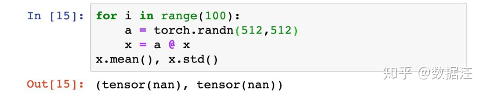
在网络的第29个激活层输出发生梯度爆炸，很明显网络的权重初始化值过大。
不仅如此，我们同时还要防止层输出发生梯度消失。为了看看当网络权重初始值太小时会发生什么 - 我们将缩小例子的权重值，使它们仍然落入平均值为0的正态分布内，而标准差为0.01。
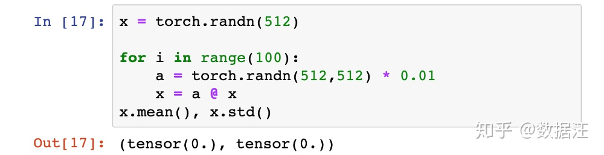
在上述假设的正向传播过程中，激活层输出出现了完全消失的现象。
总结一下，权重初始值太大或者太小，网络都将无法很好地进行学习。
2 如何找到最佳权重值？
神经网络正向传播在数学上只需做连续的矩阵乘法。输出y是输入向量x和权重矩阵a之间的矩阵乘法之积。
为了计算y，我们将输入向量x的某个元素乘以权重矩阵a的一列所得的512个乘积相加。在我们的例子中使用了标准正态分布来初始化x和a，所以这512个乘积的均值都为0，标准差都为1。所以，这512个乘积的总和的均值为0，方差为512，因此标准差为√512。
可以证明，在某给定层，根据标准正态分布初始化的输入x和权重矩阵a的乘积，通常具有非常接近输入连接数平方根的标准差，在我们的例子中是√512。
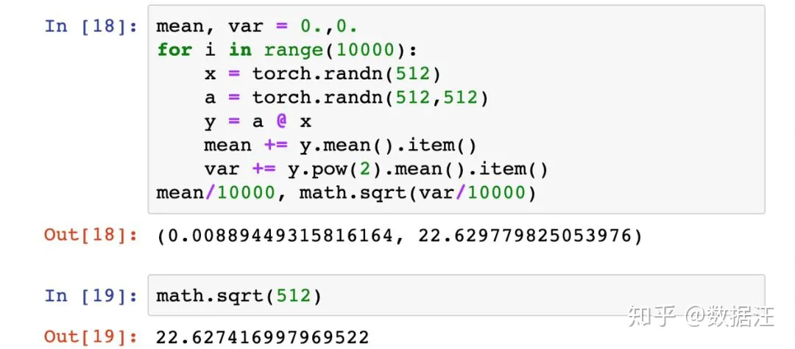
这就是为什么在上面的例子中层输出在29次连续的矩阵乘法后会发生梯度爆炸。这个简单的100层网络架构中，我们想要的是每层输出具有大约1的标准差，这样就可以使我们在尽可能多的网络层上重复矩阵乘法，而不会发生梯度爆炸或消失。
如果我们首先通过将权重矩阵a的各随机选择值除以√512来对其进行缩小，那么生成输出y的某个元素的输入元素与权重乘积的方差通常只有1/√512。 这意味着矩阵y的标准差（由输入x和权重a通过矩阵乘法生成的512个值组成）将是1。我们可以通过实验来验证。
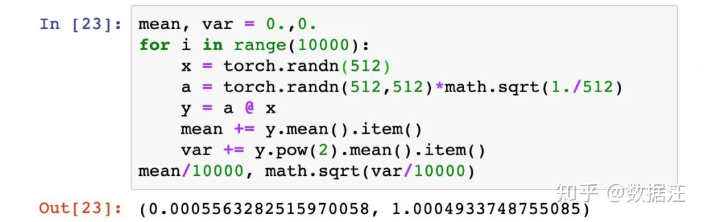
现在让我们重新运行之前的100层神经网络。与之前一样，我们首先从[-1,1]内的标准正态分布中随机选择层权重值，但这次我们用1/√n来缩小权重，其中n是每层的网络输入连接数，在我们的例子是512。
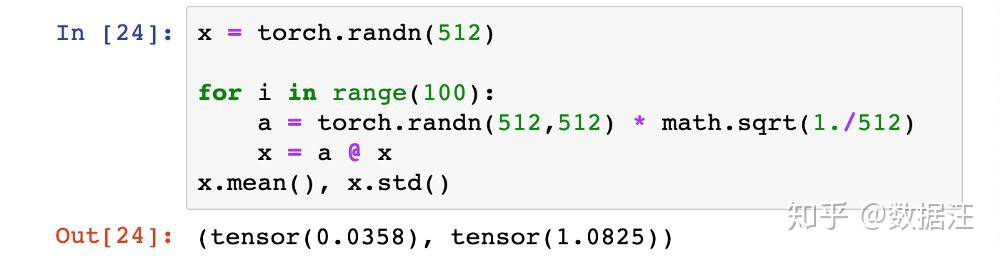
搞定！即使连续传播了100层之后，层输出也没有发生梯度爆炸或者消失。
虽然乍一看似乎真的搞定了，但现实世界的神经网络并不像我们这个例子那么简单。因为为简单起见，我们省略了激活函数。但是，在实际中我们永远不会省略激活函数。正是因为有了这些置于网络层末端的非线性激活函数，深度神经网络才具有了非线性，从而能非常近似地模拟真实世界那些错综复杂的现象，并且生成那些令人惊讶的预测，例如手写样本的分类。
3 怎样才算是好的初始化？
需要牢记参数初始化的目的是为了让神经网络在训练过程中学习到有用的信息，这意味着参数梯度不应该为0。 而我们知道在全连接的神经网络中，参数梯度和反向传播得到的状态梯度以及入激活值有关——激活值饱和会导致该层状态梯度信息为0，然后导致下面所有层的参数梯度为0；并且激活值为0会导致对应参数梯度为0。 所以如果要保证参数梯度不等于0，那么参数初始化应该使得各层激活值不会出现饱和现象且激活值不为0。我们把这两个条件总结为参数初始化条件：
初始化必要条件一：各层激活值不会出现饱和现象。
初始化必要条件二：各层激活值不为0。
4 权重初始化方法
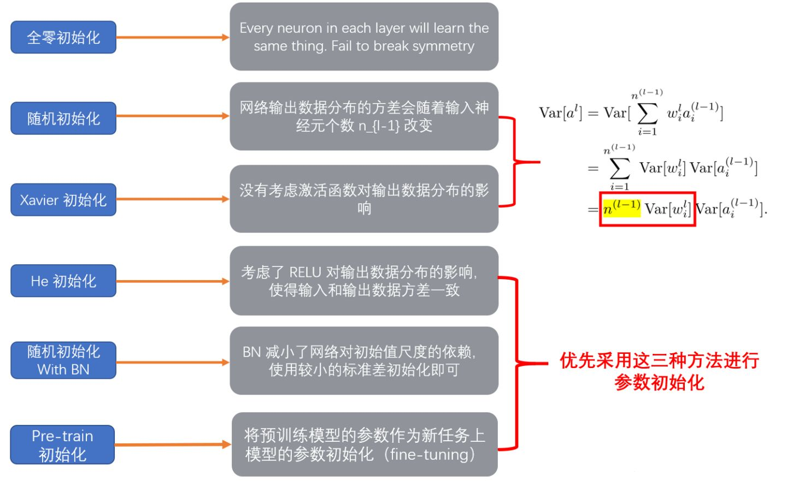
4.1 全0初始化（神经元为什么不能初始权重为0？）
我们在线性回归，logistics回归的时候，基本上都是把参数初始化为0，我们的模型也能够很好的工作。
然而在神经网络中，权重初始化为0，那么每一层的神经元学到的东西都是一样的（输出是一样的），而且在BP的时候，每一层内的神经元也是相同的，因为他们的gradient相同，weight update也相同。这显然是一个不可接受的结果。
4.2 随机初始化
随机初始化是很多人经常使用的方法，一般初始化的权重为高斯或均匀分布中随机抽取的值。然而这是有弊端的，一旦随机分布选择不当，就会导致网络优化陷入困境。
把权重初始化为较小的值，如均值为0，方差为0.01的高斯分布：
w = np.random.randn(node_in, node_out) * 0.01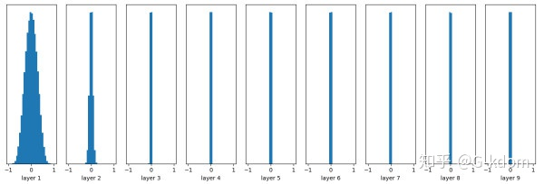
随着层数的增加，我们看到输出值迅速向0靠拢，在后几层中，几乎所有的输出值 x 都很接近0。高斯初始化，给权重较小的值，这种更新方式在小型网络中很常见，然而当网络deep的时候，会出现梯度消失的情况。
但是如果把权重初始成一个比较大的值，如均值为0，方差为1的高斯分布：
w = np.random.randn(node_in, node_out) * 1.0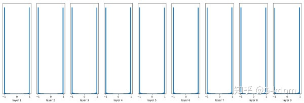
几乎所有的值集中在-1或1附近，则会造成前向传播时，神经元要么被抑制，要么被饱和。当神经网络的层数增多时，会发现越往后面的层的激活函数（tanh在-1和1附近的gradient都接近0）的输出值几乎都接近于0。梯度更新时，梯度非常接近于0，就会导致梯度消失。
4.3 Xavier初始化
Xavier初始化可以帮助减少梯度消失的问题，使得信号在神经网络中可以传递得更深，在经过多层神经元后保持在合理的范围（不至于太小或太大）。
Xavier初始化的基本思想：保持输入和输出的方差一致（服从相同的分布），这样就避免了所有输出值都趋向于0。
根据输入和输出神经元的数量自动决定初始化的范围：定义参数所在的层的输入维度为 \(m\)，输出维度为 \(n\)，那么参数将从 \((-\sqrt{\frac{6}{m+n} } , \sqrt{\frac{6}{m+n} })\) 均匀分布中采样。
注意，为了问题的简便，Xavier初始化假设激活函数是线性的。
w = np.random.randn(node_in, node_out) / np.sqrt(node_in)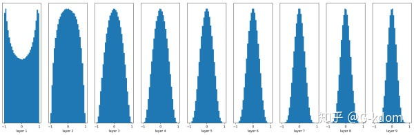
能够看出，深层的激活函数输出值还是非常漂亮的服从标准高斯分布。虽然Xavier initialization能够很好的 tanh 激活函数，但是对于目前神经网络中最常用的 ReLU 激活函数，还是无能能力，请看下图：
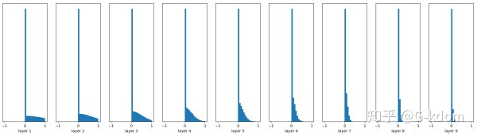
前面看起来还不错，后面的趋势却是越来越接近0，更深层的话就会很明显。Xavier初始化主要用于tanh，不适用于ReLU。
4.4 He初始化（Kaiming初始化）
主要想要解决的问题是由于经过relu后，方差会发生变化，因此我们初始化权值的方法也应该变化。只考虑输入个数时，He初始化是一个均值为0，方差为2/n的高斯分布：
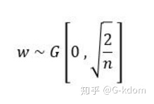
He initialization的思想是：在ReLU网络中，假定每一层有一半的神经元被激活，另一半为0（x负半轴中是不激活的），所以要保持variance不变，只需要在Xavier的基础上再除以2：
w = np.random.randn(node_in, node_out) / np.sqrt(node_in/2)4.5 Batch Normalization Layer
在网络中间层中使用 Batch Normalization 层一定程度上能够减缓对较好的网络参数初始化的依赖，使用方差较小的参数分布即可。
随机初始化，无Batch Normalization
w = tf.Variable(np.random.randn(node_in, node_out)) * 0.01
...
fc = tf.nn.relu(fc)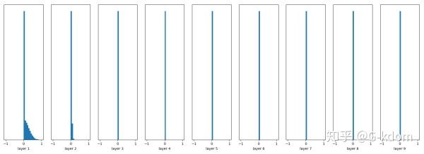
随机初始化，有Batch Normalization
w = tf.Variable(np.random.randn(node_in, node_out)) * 0.01
...
fc = tf.contrib.layers.batch_norm(fc,center = True, scale = True, is_training = True)
fc = tf.nn.relu(fc)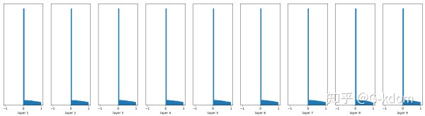
很容易看到，Batch Normalization的效果非常好，推荐使用。
4.6 pre-training
初始化这个问题明显比较麻烦，不然大家也不会这么喜欢用pre-training模型了。
pre-training是早期训练神经网络的有效初始化方法，一个便于理解的例子是先使用greedy layerwise auto-encoder做unsupervised pre-training，然后再做fine-tuning。
pre-training阶段：将神经网络中的每一层取出，构造一个auto-encoder做训练，使得输入层和输出层保持一致。在这一过程中，参数得以更新，形成初始值。
fine-tuning阶段：将pre-train过的每一层放回神经网络，利用pre-train阶段得到的参数初始值和训练数据对模型进行整体调整。在这一过程中，参数进一步被更新，形成最终模型。
随着数据量的增加以及activation function 的发展，pre-training的概念已经渐渐发生变化。目前，从零开始训练神经网络时我们也很少采用auto-encoder进行pre-training，而是直奔主题做模型训练。如果不想从零开始训练神经网络时，我们往往选择一个已经在任务A上训练好的模型（称为pre-trained model），将其放在任务B上做模型调整（称为fine-tuning）。
4.7 总结
当前的主流初始化方式 Xavier，He 主要是为了保持每层的输入与输出方差相等, 而参数的分布采用均匀分布或高斯分布都行。
在广泛采用 Batch Normalization 的情况下，使用普通的小方差的高斯分布即可。
在迁移学习的情况下，优先采用预训练的模型进行参数初始化。
5 权值初始化方式对LR的收敛有影响吗？为什么LR可以将权重初始化为0？